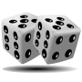
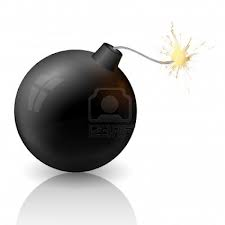

DICE
DICE is a computer implementation of popular game known as "craps".
CANONBALL
CANNONBALL - game thought as a simulator of balistic movement of shot body within gravitation field. The program calculates the curved path of cannonball according to the physical law of gravitation as well as the landing place using two parameters given by the player : initial speed and the angle of the shot.
SLING

SLING simulates shooting with a slingshot. The bullet moves across the screen along the track corresponding to the angle of shot and the strain of the sling.
MEMORY

MEMORY presents series of cards dealt face down. The player clicks on the first card, then it reveals its content. If he clicked two cards of the same value one after the other they are removed from the board, otherwise they are reversed again. The game continues until the player will find all the matches. In addition measured and displayed is the time elapsed from the start of the game.
QUIZ

QUIZ shows the player four rectangles with the name of states and four rectangles with the names of capitals. The player is designed to fit capitals of the states, in case of successful matching rectangles move to each other suggesting proper pair. The program informs the player about the correct answer.
LABYRINTH

LABYRINTH is a multi - stage game. The player builds a maze with the computer mouse, pointing the placement of walls. Next is to perform a pawn through the maze. The player also has the option to save the labyrinth on the local computer for later load the game, even if he close his browser or shut down the computer.